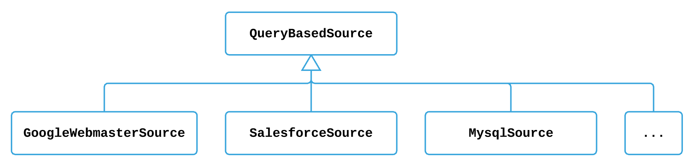

Introduction
QueryBasedSource
represents a category of sources whose data is pulled by sending queries. A dataset of a source is identified as a
SourceEntity.
Query can be done by sending HTTP requests or SQL commands. A source often, but not always, has a corresponding
QueryBasedExtractor,
which defines the way and implements common routines to extract data from the source.
Constructs
QueryBasedSource

Figure 1: Query based sources
Like other categories of sources, a QueryBasedSource focuses on creating work units as well. The way it does follows the general pattern:
- calculate low watermark of current run based on previous runs
- compute a high watermark
- partition datasets of current run into work units
- pick up previously failed work units.
At last, it will group several work units as
MultiWorkUnit
according to the mr.job.max.mappers configuration (Note: other categories of source might have a different approach to group work units into MultiWorkUnit).
QueryBasedExtractor

Figure 2: Query based extractors
Currently in Gobblin, depending on how an extractor communicates with a source
(or different communication protocols),
a QueryBasedExtractor falls into 2 categories:
RestApiExtractor
and
JdbcExtractor.
A specific extractor has to provide some
source specific logic
in order to successfully extract information from the source.
build
Building a query based extractor may involve three queries:

Figure 3: Query based extractor build queries
extractMetadatasends a query to fetch the data schema. For example:
select col.column_name, col.data_type,
case when CHARACTER_OCTET_LENGTH is null then 0 else 0 end as length,
case when NUMERIC_PRECISION is null then 0 else NUMERIC_PRECISION end as precesion,
case when NUMERIC_SCALE is null then 0 else NUMERIC_SCALE end as scale,
case when is_nullable='NO' then 'false' else 'true' end as nullable, '' as format,
case when col.column_comment is null then '' else col.column_comment end as comment
from information_schema.COLUMNS col
WHERE upper(col.table_name)=upper(?) AND upper(col.table_schema)=upper(?)
order by col.ORDINAL_POSITION
getMaxWatermarksends a query for calculating the latest high watermark. For example:
SELECT max(SystemModTime) FROM salesforce.campaign
where (SystemModTime >= '2014-01-01 00:00:00' and SystemModTime <= '2017-03-09 10:42:10')
getSourceCountsends a query for the total count of records to be pulled from the source. For example:
SELECT COUNT(1) FROM salesforce.campaign
where (SystemModTime >= '2014-01-01 00:00:00' and SystemModTime <= '2017-03-01 19:03:07')
The actual implementations of those methods are pushed to an upper layer, which uses its own protocol(e.g. Rest Api or Jdbc. The examples given are using Jdbc.) to query the source.
readRecord
While querying the record set for the last work unit, the upper bounds will be removed if appropriate. For a daily open-ended full dump job, it will fetch a more complete data set as there might be some new data generated or existing data changes between the data query creation and execution.
Two separate approaches to fetch record set:
getRecordSet: A standard way to send a query, e.g. Rest api or Jdbc
SELECT id,name,budget,systemmodtime FROM salesforce.campaign
where (SystemModTime >= '2014-01-01 00:00:00')
getRecordSetFromSourceApi: A specific way to send a query based on source api, e.g. Salesforce
Likewise, the actual implementations of those methods are pushed to an upper layer. See chapters: Rest Api, Salesforce.
Configuration
| Configuration Key | Default Value | Description |
|---|---|---|
source.querybased.schema |
Must Provide | Database name |
source.entity |
Must Provide | Name of the source entity that will be pulled from the source. It could be a database table, a source topic, a restful entity, etc. |
source.max.number.of.partitions |
20 | Maximum number of partitions or work units to split this current run across. Only used by the QueryBasedSource and FileBasedSource. |
source.querybased.watermark.type |
Must Provide | The format of the watermark that is used when extracting data from the source. Possible types are timestamp, date, hour, simple. |
source.querybased.start.value |
Must provide | Value for the watermark to start pulling data from, also the default watermark if the previous watermark cannot be found in the old task states. |
source.querybased.end.value |
Optional | The high watermark the job should pull up to. |
extract.delta.fields |
Optional | List of columns that are associated with the watermark. |
source.querybased.skip.count.calc |
False | Disable calculating the total counts of records to be pulled from the source. |
source.querybased.is.specific.api.active |
False | True if this pull needs to use source specific apis instead of standard protocols. Ex: Use salesforce bulk api instead of rest api |